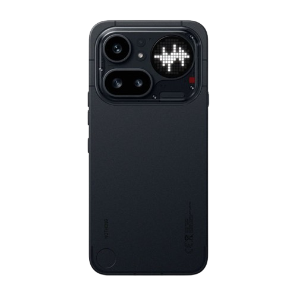

Technology!
Technology is a broad topic from phones, all the way to massive datacenters!
Importance of Technology
Here are some reasons why technology is immportant and useful fo our lifestyles
- Hospitals to keep vital data like lab results, symptons and more!
- Banks to keep track of people's bank accounts and their balances.
- Cinema's in order to play the movie (!)
- Cybersecuirty to keep important data secure online.
- And many other reasons!!
Consumer Tech
There's also consumer (user) technology! These are the things that are still important but not as important as something like a bank or a hospital.
Some examples include:

- Phones
- Tablets
- Smartwatches
- Laptops
- PC (Personal Computer) s
- Appliances including:
- Dishwashers
- Robot Cleaners
- Driers
- Fridge + Freezer, etc.
- Console
and more!